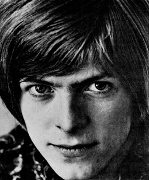
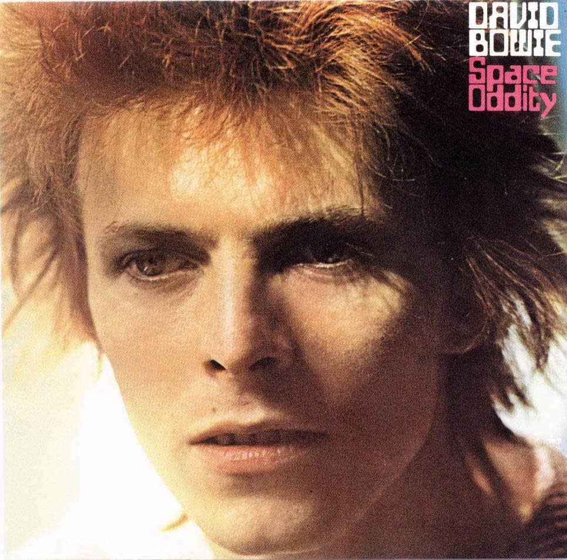
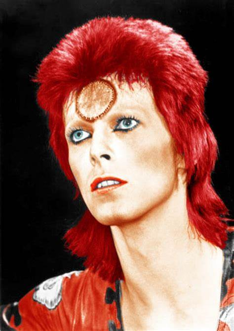
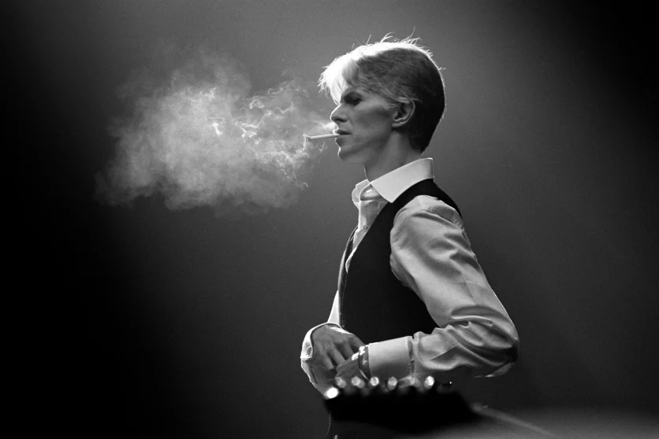
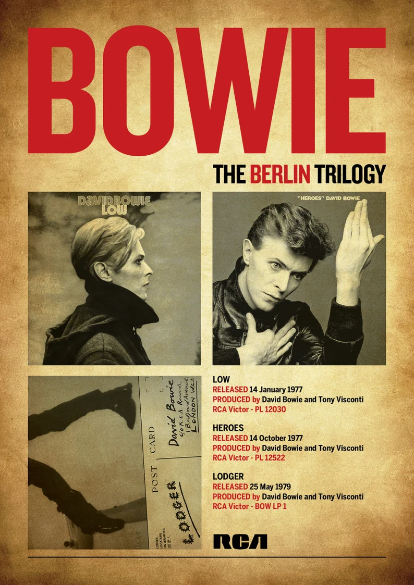
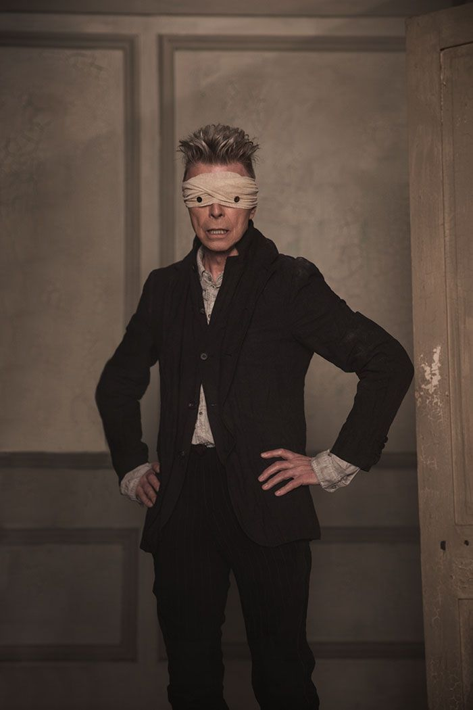

Description
David Robert Jones (8 January 1947 - 10 January 2016), known professionally as David Bowie (/'boʊi/ BOH-ee), was an English singer-songwriter and actor. A leading figure in the music industry, he is regarded as one of the most influential musicians of the 20th century. Bowie was acclaimed by critics and musicians, particularly for his innovative work during the 1970s. His career was marked by reinvention and visual presentation, and his music and stagecraft had a significant impact on popular music.
Bowie developed an interest in music as a child. He studied art, music and design before embarking on a professional career as a musician in 1963. "Space Oddity", released in 1969, was his first top-five entry on the UK Singles Chart. After a period of experimentation, he re-emerged in 1972 during the glam rock era with his flamboyant and androgynous alter ego Ziggy Stardust. The character was spearheaded by the success of Bowie's single "Starman" and album The Rise and Fall of Ziggy Stardust and the Spiders from Mars, which won him widespread popularity. In 1975, Bowie's style shifted towards a sound he characterised as "plastic soul", initially alienating many of his UK fans but garnering him his first major US crossover success with the number-one single "Fame" and the album Young Americans. In 1976, Bowie starred in the cult film The Man Who Fell to Earth and released Station to Station. In 1977, he again changed direction with the electronic-inflected album Low, the first of three collaborations with Brian Eno that came to be known as the "Berlin Trilogy". "Heroes" (1977) and Lodger (1979) followed; each album reached the UK top five and received lasting critical praise.
After uneven commercial success in the late 1970s, Bowie had three number-one hits: the 1980 single "Ashes to Ashes", its album Scary Monsters (and Super Creeps), and "Under Pressure" (a 1981 collaboration with Queen). He reached his peak commercial success in 1983 with Let's Dance: its title track topped both the UK and US charts. Throughout the 1990s and 2000s, Bowie continued to experiment with musical styles, including industrial and jungle. He also continued acting; his roles included Major Jack Celliers in Merry Christmas, Mr. Lawrence (1983), Jareth the Goblin King in Labyrinth (1986), Pontius Pilate in The Last Temptation of Christ (1988), and Nikola Tesla in The Prestige (2006), among other film and television appearances and cameos. He stopped touring after 2004 and his last live performance was at a charity event in 2006. In 2013, Bowie returned from a decade-long recording hiatus with The Next Day. He remained musically active until his death from liver cancer at his home in New York City. He died two days after both his 69th birthday and the release of his final album, Blackstar (2016).
During his lifetime, his record sales, estimated at over 100 million records worldwide, made him one of the best-selling musicians of all time. In the UK, he was awarded ten platinum, eleven gold and eight silver album certifications, and released 11 number-one albums. In the US, he received five platinum and nine gold certifications. He was inducted into the Rock and Roll Hall of Fame in 1996. Rolling Stone named him among the greatest artists in history and—after his death—the "greatest rock star ever". On 17 January 2022, Bowie was announced as the best-selling vinyl artist of the 21st century.
Career
Music Career
- 1962-1967: Early career to debut album
- 1968-1971: Space Oddity to Hunky Dory
- 1972-1974: Glam rock era
- 1974-1976: "Plastic soul" and the Thin White Duke
- 1976-1979: Berlin era
- 1980-1988: New Romantic and pop era
- 1989-1991: Tin Machine
- 1992-1998: Electronic period
- 1999-2012: Neoclassicist era
- 2013-2016: Final years
- Awards and Achievement
- 1962-1967: Early career to debut album
-

Bowie formed his first band, the Konrads, in 1962 at the age of 15. Playing guitar-based rock and roll at local youth gatherings and weddings, the Konrads had a varying line-up of between four and eight members, Underwood among them. When Bowie left the technical school the following year, he informed his parents of his intention to become a pop star. His mother arranged his employment as an electrician's mate. Frustrated by his bandmates' limited aspirations, Bowie left the Konrads and joined another band, the King Bees. He wrote to the newly successful washing-machine entrepreneur John Bloom inviting him to "do for us what Brian Epstein has done for the Beatles—and make another million." Bloom did not respond to the offer, but his referral to Dick James's partner Leslie Conn led to Bowie's first personal management contract.
Conn quickly began to promote Bowie. His debut single, "Liza Jane", credited to Davie Jones with the King Bees, was not commercially successful. Dissatisfied with the King Bees and their repertoire of Howlin' Wolf and Willie Dixon covers, Bowie quit the band less than a month later to join the Manish Boys, another blues outfit, who incorporated folk and soul—"I used to dream of being their Mick Jagger", Bowie was to recall. Their cover of Bobby Bland's "I Pity the Fool" was no more successful than "Liza Jane", and Bowie soon moved on again to join the Lower Third, a blues trio strongly influenced by the Who. "You've Got a Habit of Leaving" fared no better, signalling the end of Conn's contract. Declaring that he would exit the pop music world "to study mime at Sadler's Wells", Bowie nevertheless remained with the Lower Third. His new manager, Ralph Horton, later instrumental in his transition to solo artist, helped secure him a contract with Pye Records. Publicist Tony Hatch signed Bowie on the basis that he wrote his own songs. Dissatisfied with Davy (and Davie) Jones, which in the mid-1960s invited confusion with Davy Jones of the Monkees, he took on the stage name David Bowie after the 19th-century American pioneer James Bowie and the knife he had popularised. His first release under the name was the January 1966 single "Can't Help Thinking About Me", recorded with the Lower Third. The single flopped like its predecessors.
After the single's release, Bowie departed the Lower Third, partly due to Horton's influence, and released two more singles for Pye, "Do Anything You Say" and "I Dig Everything", both of which featured a new band called the Buzz, before signing with Deram Records. Around this time Bowie also joined the Riot Squad; their recordings, which included one of Bowie's original songs and material by the Velvet Underground, went unreleased. Kenneth Pitt, introduced by Horton, took over as Bowie's manager. His April 1967 solo single, "The Laughing Gnome", on which speeded-up and thus high-pitched vocals were used to portray the gnome in the song, failed to chart. Released six weeks later, his album debut, David Bowie, an amalgam of pop, psychedelia and music hall, met the same fate. It was his last release for two years. In September, Bowie recorded "Let Me Sleep Beside You" and "Karma Man", which were rejected by Deram for release as a single and left unreleased until 1970. Both tracks marked the beginning of Bowie's working relationship with producer Tony Visconti which, with large gaps, would last for the rest of Bowie's career. - 1968-1971: Space Oddity to Hunky Dory
-

Studying the dramatic arts under Lindsay Kemp, from avant-garde theatre and mime to commedia dell'arte, Bowie became immersed in the creation of personae to present to the world. Satirising life in a British prison, the Bowie composition "Over The Wall We Go" became a 1967 single for Oscar; another Bowie song, "Silly Boy Blue", was released by Billy Fury the following year. Playing acoustic guitar, Hermione Farthingale formed a group with Bowie and guitarist John Hutchinson named Feathers; between September 1968 and early 1969 the trio gave a small number of concerts combining folk, Merseybeat, poetry, and mime.
After the break-up with Farthingale, Bowie moved in with Mary Finnigan as her lodger. In February and March 1969, he undertook a short tour with Marc Bolan's duo Tyrannosaurus Rex, as third on the bill, performing a mime act. On 11 July 1969, "Space Oddity" was released five days ahead of the Apollo 11 launch, and reached the top five in the UK. Continuing the divergence from rock and roll and blues begun by his work with Farthingale, Bowie joined forces with Finnigan, Christina Ostrom and Barrie Jackson to run a folk club on Sunday nights at the Three Tuns pub in Beckenham High Street. The club was influenced by the Arts Lab movement, developing into the Beckenham Arts Lab and became extremely popular. The Arts Lab hosted a free festival in a local park, the subject of his song "Memory of a Free Festival".
Bowie's second album followed in November; originally issued in the UK as David Bowie, it caused some confusion with its predecessor of the same name, and the early US release was instead titled Man of Words/Man of Music; it was reissued internationally in 1972 by RCA Records as Space Oddity. Featuring philosophical post-hippie lyrics on peace, love, and morality, its acoustic folk rock occasionally fortified by harder rock, the album was not a commercial success at the time of its release.
Bowie met Angela Barnett in April 1969. They married within a year. Her impact on him was immediate, and her involvement in his career far-reaching, leaving manager Ken Pitt with limited influence which he found frustrating. Having established himself as a solo artist with "Space Oddity", Bowie began to sense a lacking: "a full-time band for gigs and recording—people he could relate to personally". The shortcoming was underlined by his artistic rivalry with Marc Bolan, who was at the time acting as his session guitarist. The band Bowie assembled comprised John Cambridge, a drummer Bowie met at the Arts Lab, Tony Visconti on bass and Mick Ronson on electric guitar. Known as Hype, the bandmates created characters for themselves and wore elaborate costumes that prefigured the glam style of the Spiders from Mars. After a disastrous opening gig at the London Roundhouse, they reverted to a configuration presenting Bowie as a solo artist. Their initial studio work was marred by a heated disagreement between Bowie and Cambridge over the latter's drumming style. Matters came to a head when an enraged Bowie accused the drummer of the disturbance, exclaiming "You're fucking up my album." Cambridge left and was replaced by Mick Woodmansey. Not long after, Bowie fired his manager and replaced him with Tony Defries. This resulted in years of litigation that concluded with Bowie having to pay Pitt compensation.
The studio sessions continued and resulted in Bowie's third album, The Man Who Sold the World (1970), which contained references to schizophrenia, paranoia, and delusion. It represented a departure from the acoustic guitar and folk-rock style established by Space Oddity, to a more hard rock sound. To promote it in the US, Mercury Records financed a coast-to-coast publicity tour across America in which Bowie, between January and February 1971, was interviewed by radio stations and the media. Exploiting his androgynous appearance, the original cover of the UK version unveiled two months later depicted Bowie wearing a dress. He took the dress with him and wore it during interviews, to the approval of critics - including Rolling Stone's John Mendelsohn, who described him as "ravishing, almost disconcertingly reminiscent of Lauren Bacall" - and in the street, to mixed reaction including laughter and, in the case of one male pedestrian, producing a gun and telling Bowie to "kiss my ass".
During the tour, Bowie's observation of two seminal American proto-punk artists led him to develop a concept that eventually found form in the Ziggy Stardust character: a melding of the persona of Iggy Pop with the music of Lou Reed, producing "the ultimate pop idol". A girlfriend recalled his "scrawling notes on a cocktail napkin about a crazy rock star named Iggy or Ziggy", and on his return to England he declared his intention to create a character "who looks like he's landed from Mars". The "Stardust" surname was a tribute to the "Legendary Stardust Cowboy", whose record he was given during the tour. Bowie would later cover "I Took a Trip on a Gemini Space Ship" on 2002's Heathen.
Hunky Dory (1971) found Visconti, Bowie's producer and bassist, supplanted in both roles by Ken Scott and Trevor Bolder, respectively. It again featured a stylistic shift towards art pop and melodic pop rock. It featured light fare tracks such as "Kooks", a song written for his son, Duncan Zowie Haywood Jones, born on 30 May. (His parents chose "his kooky name"—he was known as Zowie for the next 12 years—after the Greek word zoe, life.) Elsewhere, the album explored more serious subjects, and found Bowie paying unusually direct homage to his influences with "Song for Bob Dylan", "Andy Warhol", and "Queen Bitch", the latter a Velvet Underground pastiche. His first release through RCA Records, it was a commercial failure, partly due lack of promotion from the label. - 1972-1974: Glam rock era
-

Dressed in a striking costume, his hair dyed reddish-brown, Bowie launched his Ziggy Stardust stage show with the Spiders from Mars—Ronson, Bolder, and Woodmansey—at the Toby Jug pub in Tolworth in Kingston upon Thames on 10 February 1972. The show was hugely popular, catapulting him to stardom as he toured the UK over the next six months and creating, as described by Buckley, a "cult of Bowie" that was "unique—its influence lasted longer and has been more creative than perhaps almost any other force within pop fandom." The Rise and Fall of Ziggy Stardust and the Spiders from Mars (1972), combining the hard rock elements of The Man Who Sold the World with the lighter experimental rock and pop of Hunky Dory, was released in June and was considered one of the defining albums of glam rock. "Starman", issued as an April single ahead of the album, was to cement Bowie's UK breakthrough: both single and album charted rapidly following his July Top of the Pops performance of the song. The album, which remained in the chart for two years, was soon joined there by the six-month-old Hunky Dory. At the same time, the non-album single "John, I'm Only Dancing", and "All the Young Dudes", a song he wrote and produced for Mott the Hoople, were successful in the UK. The Ziggy Stardust Tour continued to the United States
Bowie contributed backing vocals, keyboards, and guitar to Reed's 1972 solo breakthrough Transformer, co-producing the album with Mick Ronson. The following year, Bowie co-produced and mixed the Stooges' album Raw Power alongside Iggy Pop. His own Aladdin Sane (1973) topped the UK chart, his first number-one album. Described by Bowie as "Ziggy goes to America", it contained songs he wrote while travelling to and across the US during the earlier part of the Ziggy tour, which now continued to Japan to promote the new album. Aladdin Sane spawned the UK top five singles "The Jean Genie" and "Drive-In Saturday"
Bowie's love of acting led to his total immersion in the characters he created for his music. "Offstage I'm a robot. Onstage I achieve emotion. It's probably why I prefer dressing up as Ziggy to being David." With satisfaction came severe personal difficulties: acting the same role over an extended period, it became impossible for him to separate Ziggy Stardust—and later, the Thin White Duke—from his own character offstage. Ziggy, Bowie said, "wouldn't leave me alone for years. That was when it all started to go sour ... My whole personality was affected. It became very dangerous. I really did have doubts about my sanity." His later Ziggy shows, which included songs from both Ziggy Stardust and Aladdin Sane, were ultra-theatrical affairs filled with shocking stage moments, such as Bowie stripping down to a sumo wrestling loincloth or simulating oral sex with Ronson's guitar. Bowie toured and gave press conferences as Ziggy before a dramatic and abrupt on-stage "retirement" at London's Hammersmith Odeon on 3 July 1973. Footage from the final show was incorporated for the film Ziggy Stardust and the Spiders from Mars, which premiered in 1979 and commercially released in 1983.
After breaking up the Spiders from Mars, Bowie attempted to move on from his Ziggy persona. His back catalogue was now highly sought after: The Man Who Sold the World had been re-released in 1972 along with Space Oddity. "Life on Mars?", from Hunky Dory, was released in June 1973 and peaked at number three on the UK Singles Chart. Entering the same chart in September, Bowie's novelty record from 1967, "The Laughing Gnome", reached number six. Pin Ups, a collection of covers of his 1960s favourites, followed in October, producing a UK number three hit in his version of the McCoys's "Sorrow" and itself peaking at number one, making David Bowie the best-selling act of 1973 in the UK. It brought the total number of Bowie albums concurrently on the UK chart to six. - 1974-1976: "Plastic soul" and the Thin White Duke
-

Bowie moved to the US in 1974, initially staying in New York City before settling in Los Angeles. Diamond Dogs (1974), parts of which found him heading towards soul and funk, was the product of two distinct ideas: a musical based on a wild future in a post-apocalyptic city, and setting George Orwell's 1984 to music. The album went to number one in the UK, spawning the hits "Rebel Rebel" and "Diamond Dogs", and number five in the US. To promote it, Bowie launched the Diamond Dogs Tour, visiting cities in North America between June and December 1974. Choreographed by Toni Basil, and lavishly produced with theatrical special effects, the high-budget stage production was filmed by Alan Yentob. The resulting documentary, Cracked Actor, featured a pasty and emaciated Bowie: the tour coincided with his slide from heavy cocaine use into addiction, producing severe physical debilitation, paranoia, and emotional problems. He later commented that the accompanying live album, David Live, ought to have been titled "David Bowie Is Alive and Well and Living Only in Theory". David Live nevertheless solidified Bowie's status as a superstar, charting at number two in the UK and number eight in the US. It also spawned a UK number ten hit in Bowie's cover of Eddie Floyd's "Knock on Wood". After a break in Philadelphia, where Bowie recorded new material, the tour resumed with a new emphasis on soul.
The fruit of the Philadelphia recording sessions was Young Americans (1975). Sandford writes, "Over the years, most British rockers had tried, one way or another, to become black-by-extension. Few had succeeded as Bowie did now." The album's sound, which Bowie identified as "plastic soul", constituted a radical shift in style that initially alienated many of his UK devotees. Young Americans yielded Bowie's first US number one, "Fame", co-written with John Lennon, who contributed backing vocals, and Carlos Alomar. Lennon called Bowie's work "great, but it's just rock'n'roll with lipstick on". Earning the distinction of being one of the first white artists to appear on the US variety show Soul Train, Bowie mimed "Fame", as well as "Golden Years", his November single, which was originally offered to Elvis Presley, who declined it. Young Americans was a commercial success in both the US and the UK, and a re-issue of the 1969 single "Space Oddity" became Bowie's first number-one hit in the UK a few months after "Fame" achieved the same in the US. Despite his by now well-established superstardom, Bowie, in the words of Sandford, "for all his record sales (over a million copies of Ziggy Stardust alone), existed essentially on loose change." In 1975, in a move echoing Pitt's acrimonious dismissal five years earlier, Bowie fired his manager. At the culmination of the ensuing months-long legal dispute, he watched, as described by Sandford, "millions of dollars of his future earnings being surrendered" in what were "uniquely generous terms for Defries", then "shut himself up in West 20th Street, where for a week his howls could be heard through the locked attic door." Michael Lippman, Bowie's lawyer during the negotiations, became his new manager; Lippman, in turn, was awarded substantial compensation when Bowie fired him the following year.
Station to Station (1976), produced by Bowie and Harry Maslin, introduced a new Bowie persona, "The Thin White Duke" of its title-track. Visually, the character was an extension of Thomas Jerome Newton, the extraterrestrial being he portrayed in the film The Man Who Fell to Earth the same year. Developing the funk and soul of Young Americans, Station to Station's synthesizer-heavy arrangements prefigured the krautrock-influenced music of his next releases. The extent to which drug addiction was now affecting Bowie was made public when Russell Harty interviewed him for his London Weekend Television talk show in anticipation of the album's supporting tour. Shortly before the satellite-linked interview was scheduled to commence, the death of the Spanish dictator Francisco Franco was announced. Bowie was asked to relinquish the satellite booking, to allow the Spanish Government to put out a live newsfeed. This he refused to do, and his interview went ahead. In the ensuing lengthy conversation with Harty, Bowie was incoherent and looked "disconnected" His sanity—by his own later admission—had become twisted from cocaine; he overdosed several times during the year and was withering physically to an alarming degree.
Station to Station's January 1976 release was followed in February by a 3 1/2-month-long concert tour of Europe and North America. Featuring a starkly lit set, the Isolar - 1976 Tour with its colour newsprint Isolar concert program, highlighted songs from the album, including the dramatic and lengthy title track, the ballads "Wild Is the Wind" and "Word on a Wing", and the funkier "TVC 15" and "Stay". The core band that coalesced to record this album and tour—rhythm guitarist Carlos Alomar, bassist George Murray, and drummer Dennis Davis—continued as a stable unit for the remainder of the 1970s. The tour was highly successful but mired in political controversy. Bowie was quoted in Stockholm as saying that "Britain could benefit from a Fascist leader", and was detained by customs on the Russian/Polish border for possessing Nazi paraphernalia.
Matters came to a head in London in May in what became known as the "Victoria Station incident". Arriving in an open-top Mercedes convertible, Bowie waved to the crowd in a gesture that some alleged was a Nazi salute, which was captured on camera and published in NME. Bowie said the photographer caught him in mid-wave. He later blamed his pro-fascism comments and his behaviour during the period on his addictions and the character of the Thin White Duke. "I was out of my mind, totally crazed. The main thing I was functioning on was mythology ... that whole thing about Hitler and Rightism ... I'd discovered King Arthur". According to playwright Alan Franks, writing later in The Times, "he was indeed 'deranged'. He had some very bad experiences with hard drugs." Bowie's cocaine addiction, which had motivated these controversies, had much to do with his time living in Los Angeles, a city which alienated him. Discussing his flirtations with fascism in a 1980 interview with NME, Bowie explained that Los Angeles was "where it had all happened. The fucking place should be wiped off the face of the Earth. To be anything to do with rock and roll and go and live in Los Angeles is, I think, just heading for disaster. It really is."
After recovering from addiction, Bowie apologised for these statements, and throughout the 1980s and 1990s criticised racism in European politics and the American music industry Nevertheless, Bowie's comments on fascism, as well as Eric Clapton's alcohol-fuelled denunciations of Pakistani immigrants in 1976, led to the establishment of Rock Against Racism. - 1976-1979: Berlin era
-

Before the end of 1976, Bowie's interest in the burgeoning German music scene, as well as his drug addiction, prompted him to move to West Berlin to clean up and revitalise his career. There he was often seen riding a bicycle between his apartment on Hauptstraße in Schöneberg and Hansa Tonstudio, the recording studio he used, located on Köthener Straße in Kreuzberg, near the Berlin Wall While working with Brian Eno and sharing an apartment with Iggy Pop, he began to focus on minimalist, ambient music for the first of three albums, co-produced with Tony Visconti, that became known as the Berlin Trilogy During the same period, Iggy Pop, with Bowie as a co-writer and musician, completed his solo album debut The Idiot and its follow-up Lust for Life, touring the UK, Europe, and the US in March and April 1977.
Echoing Low's minimalist, instrumental approach, the second of the trilogy, "Heroes" (1977), incorporated pop and rock to a greater extent, seeing Bowie joined by guitarist Robert Fripp. Like Low, "Heroes" evinced the zeitgeist of the Cold War, symbolised by the divided city of Berlin. Incorporating ambient sounds from a variety of sources including white noise generators, synthesisers and koto, the album was another hit, reaching number three in the UK. Its title-track, though only reaching number 24 in the UK singles chart, gained lasting popularity, and within months had been released in both German and French. Towards the end of the year, Bowie performed the song for Marc Bolan's television show Marc, and again two days later for Bing Crosby's final CBS television Christmas special, when he joined Crosby in "Peace on Earth/Little Drummer Boy", a version of "The Little Drummer Boy" with a new, contrapuntal verse. Five years later, the duet proved a worldwide seasonal hit, charting in the UK at number three on Christmas Day, 1982.
After completing Low and "Heroes", Bowie spent much of 1978 on the Isolar II world tour, bringing the music of the first two Berlin Trilogy albums to almost a million people during 70 concerts in 12 countries. By now he had broken his drug addiction; biographer David Buckley writes that Isolar II was "Bowie's first tour for five years in which he had probably not anaesthetised himself with copious quantities of cocaine before taking the stage. ... Without the oblivion that drugs had brought, he was now in a healthy enough mental condition to want to make friends." Recordings from the tour made up the live album Stage, released the same year. Bowie also recorded narration for an adaptation of Sergei Prokofiev's classical composition Peter and the Wolf, which was released as an album in May 1978.
The final piece in what Bowie called his "triptych", Lodger (1979), eschewed the minimalist, ambient nature of the other two, making a partial return to the drum- and guitar-based rock and pop of his pre-Berlin era. The result was a complex mixture of new wave and world music, in places incorporating Hijaz non-Western scales. Some tracks were composed using Eno and Peter Schmidt's Oblique Strategies cards: "Boys Keep Swinging" entailed band members swapping instruments, "Move On" used the chords from Bowie's early composition "All the Young Dudes" played backwards, and "Red Money" took backing tracks from "Sister Midnight", a piece previously composed with Iggy Pop. The album was recorded in Switzerland. Ahead of its release, RCA's Mel Ilberman stated, "It would be fair to call it Bowie's Sergeant Pepper ... a concept album that portrays the Lodger as a homeless wanderer, shunned and victimized by life's pressures and technology." As described by Sandford, "The record dashed such high hopes with dubious choices, and production that spelt the end—for fifteen years—of Bowie's partnership with Eno." Lodger reached number four in the UK and number 20 in the US, and yielded the UK hit singles "Boys Keep Swinging" and "DJ". Towards the end of the year, Bowie and Angie initiated divorce proceedings, and after months of court battles the marriage was ended in early 1980. - 1980-1988: New Romantic and pop era
-
Scary Monsters (and Super Creeps) (1980) produced the number-one hit "Ashes to Ashes", featuring the textural work of guitar-synthesist Chuck Hammer and revisiting the character of Major Tom from "Space Oddity". The song gave international exposure to the underground New Romantic movement when Bowie visited the London club "Blitz"—the main New Romantic hangout—to recruit several of the regulars (including Steve Strange of the band Visage) to act in the accompanying video, renowned as one of the most innovative of all time. While Scary Monsters used principles established by the Berlin albums, it was considered by critics to be far more direct musically and lyrically. The album's hard rock edge included conspicuous guitar contributions from Robert Fripp, Chuck Hammer, and Pete Townshend. As "Ashes to Ashes" hit number one on the UK charts, Bowie opened a five-month run on Broadway on 29 July, starring as John Merrick in The Elephant Man.
Bowie paired with Queen in 1981 for a one-off single release, "Under Pressure". The duet was a hit, becoming Bowie's third UK number-one single. Bowie was given the lead role in the BBC's 1982 televised adaptation of Bertolt Brecht's play Baal. Coinciding with its transmission, a five-track EP of songs from the play, recorded earlier in Berlin, was released as David Bowie in Bertolt Brecht's Baal. In March 1982, the month before Paul Schrader's film Cat People came out, Bowie's title song, "Cat People (Putting Out Fire)", was released as a single, becoming a minor US hit and entering the UK Top 30.
Bowie reached his peak of popularity and commercial success in 1983 with Let's Dance. Co-produced by Chic's Nile Rodgers, the album went platinum in both the UK and the US. Its three singles became Top 20 hits in both countries, where its title track reached number one. "Modern Love" and "China Girl" each made number two in the UK, accompanied by a pair of "absorbing" promotional videos that biographer David Buckley said "activated key archetypes in the pop world... 'Let's Dance', with its little narrative surrounding the young Aboriginal couple, targeted 'youth', and 'China Girl', with its bare-bummed (and later partially censored) beach lovemaking scene (a homage to the film From Here to Eternity), was sufficiently sexually provocative to guarantee heavy rotation on MTV". Stevie Ray Vaughan was a guest guitarist playing solo on "Let's Dance", although the video depicts Bowie miming this part. By 1983, Bowie had emerged as one of the most important video artists of the day. Let's Dance was followed by the Serious Moonlight Tour, during which Bowie was accompanied by guitarist Earl Slick and backing vocalists Frank and George Simms. The world tour lasted six months and was extremely popular. At the 1984 MTV Video Music Awards Bowie received two awards including the inaugural Video Vanguard Award.
Tonight (1984), another dance-oriented album, found Bowie collaborating with Tina Turner and, once again, Iggy Pop. It included a number of cover songs, among them the 1966 Beach Boys hit "God Only Knows". The album bore the transatlantic Top 10 hit "Blue Jean", itself the inspiration for a short film that won Bowie a Grammy Award for Best Short Form Music Video, Jazzin' for Blue Jean. Bowie performed at Wembley Stadium in 1985 for Live Aid, a multi-venue benefit concert for Ethiopian famine relief. During the event, the video for a fundraising single, Bowie's duet with Mick Jagger, was premiered. "Dancing in the Street" quickly went to number one on release. The same year, Bowie worked with the Pat Metheny Group to record "This Is Not America" for the soundtrack of The Falcon and the Snowman. Released as a single, the song became a Top 40 hit in the UK and US.
Bowie was given a role in the 1986 film Absolute Beginners. It was poorly received by critics, but Bowie's theme song, also named "Absolute Beginners", rose to number two in the UK charts. He also appeared as Jareth, the Goblin King, in the 1986 Jim Henson film Labyrinth, for which he worked with composer Trevor Jones and wrote five original songs. His final solo album of the decade was 1987's Never Let Me Down, where he ditched the light sound of his previous two albums, instead offering harder rock with an industrial/techno dance edge. Peaking at number six in the UK, the album yielded the hits "Day-In, Day-Out", "Time Will Crawl", and "Never Let Me Down". Bowie later described it as his "nadir", calling it "an awful album". Supporting Never Let Me Down, and preceded by nine promotional press shows, the 86-concert Glass Spider Tour commenced on 30 May. Bowie's backing band included Peter Frampton on lead guitar. Contemporary critics maligned the tour as overproduced, saying it pandered to the current stadium rock trends in its special effects and dancing, although in later years critics acknowledged the tour's strengths and influence on concert tours by other artists, such as Britney Spears, Madonna, and U2. - 1989-1991: Tin Machine
-
Bowie shelved his solo career in 1989, retreating to the relative anonymity of band membership for the first time since the early 1970s. A hard-rocking quartet, Tin Machine came into being after Bowie began to work experimentally with guitarist Reeves Gabrels. The line-up was completed by Tony and Hunt Sales, whom Bowie had known since the late 1970s for their contribution, on bass and drums respectively, to Iggy Pop's 1977 album Lust for Life. The Sales brothers are sons of American comedian and actor Soupy Sales.
Although he intended Tin Machine to operate as a democracy, Bowie dominated, both in songwriting and in decision-making. The band's album debut, Tin Machine (1989), was initially popular, though its politicised lyrics did not find universal approval: Bowie described one song as "a simplistic, naive, radical, laying-it-down about the emergence of Neo-Nazis"; in the view of Sandford, "It took nerve to denounce drugs, fascism and TV ... in terms that reached the literary level of a comic book." EMI complained of "lyrics that preach" as well as "repetitive tunes" and "minimalist or no production". The album nevertheless reached number three and went gold in the UK.
Tin Machine's first world tour was a commercial success, but there was growing reluctance—among fans and critics alike—to accept Bowie's presentation as merely a band member. A series of Tin Machine singles failed to chart, and Bowie, after a disagreement with EMI, left the label. Like his audience and his critics, Bowie himself became increasingly disaffected with his role as just one member of a band. Tin Machine began work on a second album, but Bowie put the venture on hold and made a return to solo work. Performing his early hits during the seven-month Sound+Vision Tour, he found commercial success and acclaim once again.
In October 1990, a decade after his divorce from Angie, Bowie and Somali-born supermodel Iman were introduced by a mutual friend. Bowie recalled, "I was naming the children the night we met ... it was absolutely immediate." They married in 1992. Tin Machine resumed work the same month, but their audience and critics, ultimately left disappointed by the first album, showed little interest in a second. Tin Machine II's arrival was marked by a widely publicised and ill-timed conflict over the cover art: after production had begun, the new record label, Victory, deemed the depiction of four ancient nude Kouroi statues, judged by Bowie to be "in exquisite taste", to be "a show of wrong, obscene images", requiring air-brushing and patching to render the figures sexless. Tin Machine toured again, but after the live album Tin Machine Live: Oy Vey, Baby failed commercially, the band drifted apart, and Bowie, though he continued to collaborate with Gabrels, resumed his solo career. - 1992-1998: Electronic period
-
On 20 April 1992, Bowie appeared at The Freddie Mercury Tribute Concert, following the Queen singer's death the previous year. As well as performing "'Heroes'" and "All the Young Dudes", he was joined on "Under Pressure" by Annie Lennox, who took Mercury's vocal part; during his appearance, Bowie knelt and recited the Lord's Prayer at Wembley Stadium. Four days later, Bowie and Iman were married in Switzerland. Intending to move to Los Angeles, they flew in to search for a suitable property, but found themselves confined to their hotel, under curfew: the 1992 Los Angeles riots began the day they arrived. They settled in New York instead.
In 1993, Bowie released his first solo offering since his Tin Machine departure, the soul, jazz, and hip-hop influenced Black Tie White Noise. Making prominent use of electronic instruments, the album, which reunited Bowie with Let's Dance producer Nile Rodgers, confirmed Bowie's return to popularity, hitting the number-one spot on the UK charts and spawning three Top 40 hits, including the Top 10 single "Jump They Say". Bowie explored new directions on The Buddha of Suburbia (1993), ostensibly a soundtrack album of his music composed for the BBC television adaptation of Hanif Kureishi's novel. Only the title track had been used in the television adaptation, although some of his themes for it were also present on the album. It contained some of the new elements introduced in Black Tie White Noise, and also signalled a move towards alternative rock. The album was a critical success but received a low-key release and only made number 87 in the UK charts.
Reuniting Bowie with Eno, the quasi-industrial Outside (1995) was originally conceived as the first volume in a non-linear narrative of art and murder. Featuring characters from a short story written by Bowie, the album achieved UK and US chart success and yielded three Top 40 UK singles. In a move that provoked mixed reactions from both fans and critics, Bowie chose Nine Inch Nails as his tour partner for the Outside Tour. Visiting cities in Europe and North America between September 1995 and February 1996, the tour saw the return of Gabrels as Bowie's guitarist. On 7 January 1997, Bowie celebrated his half century with a 50th birthday concert at Madison Square Garden, New York, at which he was joined in playing his songs and those of his guests, Lou Reed, Dave Grohl and the Foo Fighters, Robert Smith of the Cure, Billy Corgan of the Smashing Pumpkins, Black Francis of the Pixies, and Sonic Youth.
Bowie was inducted into the Rock and Roll Hall of Fame on 17 January 1996. Incorporating experiments in British jungle and drum 'n' bass, Earthling (1997) was a critical and commercial success in the UK and the US, and two singles from the album - "Little Wonder" and "Dead Man Walking" - became UK Top 40 hits. Bowie's song "I'm Afraid of Americans" from the Paul Verhoeven film Showgirls was re-recorded for the album, and remixed by Trent Reznor for a single release. The heavy rotation of the accompanying video, also featuring Trent Reznor, contributed to the song's 16-week stay in the US Billboard Hot 100. Reznor also executive produced the Lost Highway soundtrack (1997) which begins and ends with different mixes of Bowie's Outside song "I'm Deranged". Bowie received a star on the Hollywood Walk of Fame on 12 February 1997. The Earthling Tour took place in Europe and North America between June and November 1997. In November 1997, Bowie performed on the BBC's Children in Need charity single "Perfect Day", which reached number one in the UK. Bowie reunited with Visconti in 1998 to record "(Safe in This) Sky Life" for The Rugrats Movie. Although the track was edited out of the final cut, it was later re-recorded and released as "Safe" on the B-side of Bowie's 2002 single "Everyone Says 'Hi'". The reunion led to other collaborations including a limited-edition single release version of Placebo's track "Without You I'm Nothing", co-produced by Visconti, with Bowie's harmonised vocal added to the original recording. - 1999-2012: Neoclassicist era
-
Bowie, with Gabrels, created the soundtrack for Omikron: The Nomad Soul, a 1999 computer game in which he and Iman also voiced characters based on their likenesses. Released the same year and containing re-recorded tracks from Omikron, his album Hours featured a song with lyrics by the winner of his "Cyber Song Contest" Internet competition, Alex Grant. Making extensive use of live instruments, the album was Bowie's exit from heavy electronica. Hours and a performance on VH1 Storytellers in mid-1999 represented the end of Gabrels' association with Bowie as a performer and songwriter. Sessions for the planned album Toy, intended to feature new versions of some of Bowie's earliest pieces as well as three new songs, commenced in 2000, but the album remained officially unreleased until 2021. Bowie and Visconti continued their collaboration, producing a new album of completely original songs instead: the result of the sessions was the 2002 album Heathen.
On 25 June 2000, Bowie made his second appearance at the Glastonbury Festival in England, playing 30 years after his first. The performance was released as a posthumous live album in November 2018. On 27 June, Bowie performed a concert at the BBC Radio Theatre in London, which was released on the compilation album Bowie at the Beeb; this also featured BBC recording sessions from 1968 to 1972. Bowie and Iman's daughter was born on 15 August. His interest in Buddhism led him to support the Tibetan cause by performing at the February 2001 and February 2003 concerts to support Tibet House US at Carnegie Hall in New York.
In October 2001, Bowie opened the Concert for New York City, a charity event to benefit the victims of the September 11 attacks, with a minimalist performance of Simon & Garfunkel's "America", followed by a full band performance of "'Heroes'". 2002 saw the release of Heathen, and, during the second half of the year, the Heathen Tour. Taking place in Europe and North America, the tour opened at London's annual Meltdown festival, for which Bowie was that year appointed artistic director. Among the acts he selected for the festival were Philip Glass, Television, and the Dandy Warhols. As well as songs from the new album, the tour featured material from Bowie's Low era. Reality (2003) followed, and its accompanying world tour, the A Reality Tour, with an estimated attendance of 722,000, grossed more than any other in 2004. On 13 June, Bowie headlined the last night of the Isle of Wight Festival 2004, his final live show in the UK. On 25 June, he suffered chest pain while performing at the Hurricane Festival in Scheeßel, Germany. Originally thought to be a pinched nerve in his shoulder, the pain was later diagnosed as an acutely blocked coronary artery, requiring an emergency angioplasty in Hamburg. The remaining 14 dates of the tour were cancelled.
In the years following his recuperation from the heart attack, Bowie reduced his musical output, making only one-off appearances on stage and in the studio. He sang in a duet of his 1971 song "Changes" with Butterfly Boucher for the 2004 animated film Shrek 2. During a relatively quiet 2005, he recorded the vocals for the song "(She Can) Do That", co-written with Brian Transeau, for the film Stealth. He returned to the stage on 8 September 2005, appearing with Arcade Fire for the US nationally televised event Fashion Rocks, and performed with the Canadian band for the second time a week later during the CMJ Music Marathon. He contributed backing vocals on TV on the Radio's song "Province" for their album Return to Cookie Mountain, and joined with Lou Reed on Danish alt-rockers Kashmir's 2005 album No Balance Palace.
Bowie was awarded the Grammy Lifetime Achievement Award on 8 February 2006. In April, he announced, "I'm taking a year off—no touring, no albums." He made a surprise guest appearance at David Gilmour's 29 May concert at the Royal Albert Hall in London. The event was recorded, and a selection of songs on which he had contributed joint vocals were subsequently released. He performed again in November, alongside Alicia Keys, at the Black Ball, a benefit event for Keep a Child Alive at the Hammerstein Ballroom in New York. The performance marked the last time Bowie performed his music on stage.
Bowie was chosen to curate the 2007 High Line Festival. The musicians and artists he selected for the Manhattan event included electronic pop duo AIR, surrealist photographer Claude Cahun and English comedian Ricky Gervais. Bowie performed on Scarlett Johansson's 2008 album of Tom Waits covers, Anywhere I Lay My Head. In June 2008 a live album was released of a Ziggy Stardust-era concert from 1972. On the 40th anniversary of the July 1969 moon landing—and Bowie's accompanying commercial breakthrough with "Space Oddity"—EMI released the individual tracks from the original eight-track studio recording of the song, in a 2009 contest inviting members of the public to create a remix. A Reality Tour, a double album of live material from the 2003 concert tour, was released in January 2010.
In late March 2011, Toy, Bowie's previously unreleased album from 2001, was leaked onto the internet, containing material used for Heathen and most of its single B-sides, as well as unheard new versions of his early back catalogue. - 2013-2016: Final years
-

On 8 January 2013, his 66th birthday, his website announced a new album, to be titled The Next Day and scheduled for release in March. Bowie's first studio album in a decade, The Next Day contains 14 songs plus 3 bonus tracks. His website acknowledged the length of his hiatus. Producer and longtime collaborator Tony Visconti said 29 tracks were recorded for the album, some of which could appear on Bowie's next record, which he might start work on later in 2013. The announcement was accompanied by the immediate release of a single, "Where Are We Now?", written and recorded by Bowie in New York and produced by Visconti.
A music video for "Where Are We Now?" was released onto Vimeo the same day, directed by New York artist Tony Oursler. The single topped the UK iTunes Chart within hours of its release, and debuted in the UK Singles Chart at number six, his first single to enter the Top 10 for two decades (since "Jump They Say" in 1993). A second video, "The Stars (Are Out Tonight)", was released 25 February. Directed by Floria Sigismondi, it stars Bowie and Tilda Swinton as a married couple. On 1 March, the album was made available to stream for free through iTunes. The Next Day debuted at number one on the UK Albums Chart, was his first album to achieve that position since Black Tie White Noise (1993), and was the fastest-selling album of 2013 at the time. The music video for the song "The Next Day" created some controversy, initially being removed from YouTube for terms-of-service violation, then restored with a warning recommending viewing only by those 18 or over.
According to The Times, Bowie ruled out ever giving an interview again. Later in 2013, Bowie was featured in a cameo vocal in the Arcade Fire song "Reflektor". A poll carried out by BBC History Magazine, in October 2013, named Bowie as the best-dressed Briton in history. In mid-2014, Bowie was diagnosed with liver cancer, a diagnosis he kept private. New information was released in September 2014 regarding his next compilation album, Nothing Has Changed, which was released in November. The album featured rare tracks and old material from his catalogue in addition to a new song titled "Sue (Or in a Season of Crime)". In May 2015, "Let's Dance" was announced to be reissued as a yellow vinyl single on 16 July 2015 in conjunction with the David Bowie Is exhibition at the Australian Centre for the Moving Image in Melbourne, Australia.
In August 2015, it was announced that Bowie was writing songs for a Broadway musical based on the SpongeBob SquarePants cartoon series. Bowie wrote and recorded the opening title song to the television series The Last Panthers, which aired in November 2015. The theme that was used for The Last Panthers was also the title track for his January 2016 release Blackstar which is said to take cues from his earlier krautrock-influenced work. According to The Times: "Blackstar may be the oddest work yet from Bowie". On 7 December 2015, Bowie's musical Lazarus debuted in New York. His last public appearance was at opening night of the production.
Blackstar was released on 8 January 2016, Bowie's 69th birthday, and was met with critical acclaim. Following his death on 10 January, Visconti revealed that Bowie had planned the album to be his swan song, and a "parting gift" for his fans before his death. Several reporters and critics subsequently noted that most of the lyrics on the album seem to revolve around his impending death, with CNN noting that the album "reveals a man who appears to be grappling with his own mortality". Visconti later said that Bowie had been planning a post-Blackstar album, and had written and recorded demo versions of five songs in his final weeks, suggesting that Bowie believed he had a few months left. The day following his death, online viewing of Bowie's music skyrocketed, breaking the record for Vevo's most viewed artist in a single day. On 15 January, Blackstar debuted at number one on the UK Albums Chart; nineteen of his albums were in the UK Top 100 Albums Chart, and thirteen singles were in the UK Top 100 Singles Chart. Blackstar also debuted at number one on album charts around the world, including Australia, France, Germany, Italy, New Zealand, and the US Billboard 200. - Awards and Achievement
-

Bowie's 1969 commercial breakthrough, the song "Space Oddity", won him an Ivor Novello Special Award For Originality. For his performance in the 1976 science fiction film The Man Who Fell to Earth, he won a Saturn Award for Best Actor. In the ensuing decades he was honoured with numerous awards for his music and its accompanying videos, receiving, among others, six Grammy Awards and four Brit Awards—winning Best British Male Artist twice; the award for Outstanding Contribution to Music in 1996; and the Brits Icon award for his "lasting impact on British culture", given posthumously in 2016.
In 1999, Bowie was made a Commander of the Ordre des Arts et des Lettres by the French government. He received an honorary doctorate from Berklee College of Music the same year. He declined the royal honour of Commander of the Order of the British Empire (CBE) in 2000, and turned down a knighthood in 2003. Bowie later stated "I would never have any intention of accepting anything like that. I seriously don't know what it's for. It's not what I spent my life working for."
During his lifetime, Bowie sold over 100 million records worldwide, making him one of the best-selling music artists. In the United Kingdom, he was awarded 9 platinum, 11 gold, and 8 silver albums, and in the United States, 5 platinum and 9 gold. Since 2015, Parlophone has remastered Bowie's back catalogue through the "Era" box set series, starting with Five Years (1969-1973). Bowie was announced as the best-selling vinyl artist of the 21st century in 2022.
Rolling Stone's 500 Greatest Albums of All Time list includes The Rise and Fall of Ziggy Stardust and the Spiders from Mars at number 40, Station to Station at number 52, Hunky Dory at number 88, Low at number 206, and Scary Monsters (and Super Creeps) at number 443. And, on their 500 Greatest Songs of All Time list, Rolling Stone includes "'Heroes'" at number 23, "Life on Mars?" at number 105, "Space Oddity" at number 189, "Changes" at number 200, "Young Americans" at number 204, "Station to Station" at number 400, and "Under Pressure" at number 429. Four of his songs are included in The Rock and Roll Hall of Fame's 500 Songs that Shaped Rock and Roll. According to Acclaimed Music, he is the fourth most celebrated artist in popular music history.
In the BBC's 2002 poll of the 100 Greatest Britons, he was ranked 29. In 2004, Rolling Stone magazine ranked him 39th on their list of the 100 Greatest Artists of All Time. Bowie was inducted into the Rock and Roll Hall of Fame in 1996. He was inducted into the Science Fiction and Fantasy Hall of Fame in 2013. In 2016, Rolling Stone proclaimed Bowie "the greatest rock star ever". The magazine also listed him as the 39th greatest songwriter of all time.
In 2008, the spider Heteropoda davidbowie was named in Bowie's honour. On 5 January 2015, a main-belt asteroid was named 342843 Davidbowie. On 13 January 2016, Belgian amateur astronomers at MIRA Public Observatory created a "Bowie asterism" of seven stars which had been in the vicinity of Mars at the time of Bowie's death; the "constellation" forms the lightning bolt on Bowie's face from the cover of his Aladdin Sane album. On 25 March 2018, a statue of Bowie was unveiled in Aylesbury, Buckinghamshire, the town where he debuted Ziggy Stardust. The statue features a likeness of Bowie in 2002 accompanied with various characters and looks from over his career, with Ziggy Stardust at the front.